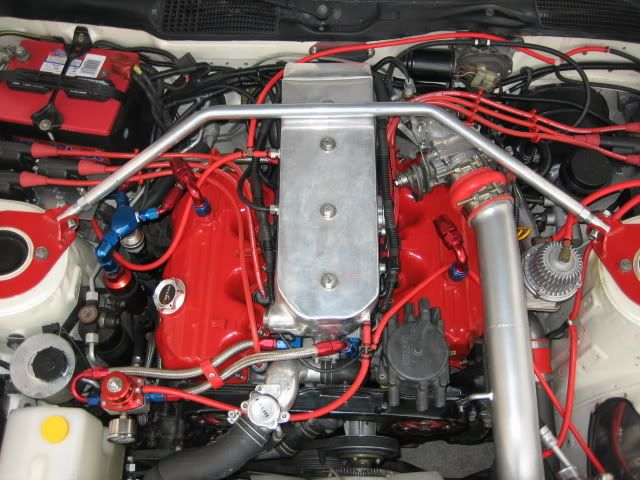
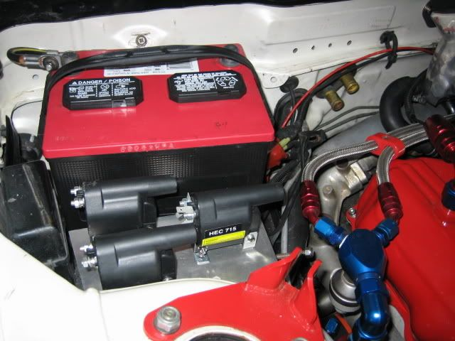
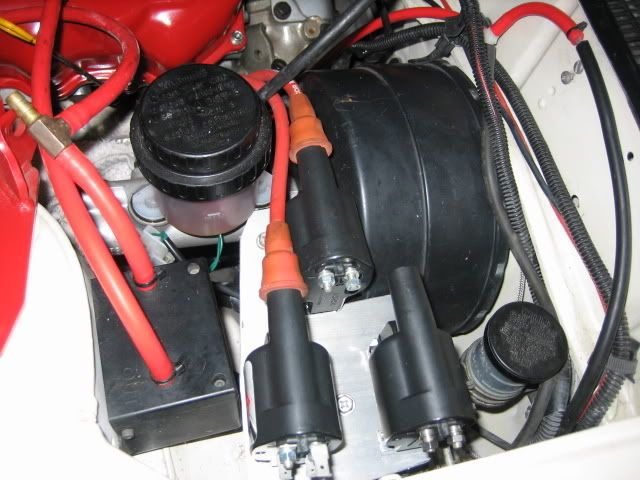

-
Most of the trucks up till 96 didn't have the consult port.
1986 300ZX Turbo…sold
1990 Skyline GT-R…new money pit
2014 Juke Nismo RS 6-speed…daily -
[quote]Bernardd wrote:well that sucks, it was a thought.Originally posted by aceman
I will keep an eye out for m30 ecu's i see a couple a year in junkyardsNearly all men can stand adversity, but if you want to test a mans character make him a moderator. -
Do you have any more information on this upgrade?Bernardd wrote: Just go straight to the z32 ecu/coilpack setup. -
leaving VTC disconnected won't piss it off? or can you just disable it in NIStune?Bernardd wrote: Just go straight to the z32 ecu/coilpack setup.
-
[quote]Andrevas wrote:I use the vtc output as my meth kit turn on.Originally posted by Bernardd
It's the same as converting to the m30 ecu except that you have to drop the guts of a z32 cas in place of the stock cas and add six wires for the coils as well as the ignitor pack. -
I believe you could also do the same waste-spark modification that the RB25DET guys do using the Buick V6 coil packs instead of buying all Z32 stuff and trying to fit it somewhere. I think the ECU's are very very similar. -
[quote]Bernardd wrote: [quote=Andrevas]I like it. what coils are you using? stock Z32? seems like there would be be space issues trying to use them.Originally posted by Bernardd -
what would be the advantage of using a Z32 ecu instead of the M30 besides the 6 individual coils?
How much power can you make with the M30 MAF?Shiro #443

-
I still have yet to find a good link for this.....because if you could do this with the rb ecu you shuld be able to do this with the z31 ecu.Careless wrote: I believe you could also do the same waste-spark modification that the RB25DET guys do using the Buick V6 coil packs instead of buying all Z32 stuff and trying to fit it somewhere. I think the ECU's are very very similar."Its the s12's sexy over weight step daughter, the z31" -
I have the L engine in a 280zx, I've got piles of room. I run the msd blaster 2 coils, the little plastic ones. With a single coil I have tuned to 490whp on a mustang dyno with no issues but we we're running a .22 gap to prevent blowout. I don't know if it was necessary as we had some other issues. I think more could be made with a wider gap with a bit of fine tuning on the coil duty cycle table.Andrevas wrote: I like it. what coils are you using? stock Z32? seems like there would be be space issues trying to use them.
You can do the gm coilpack conversion on the z32 ecu. Search the nico forums for gm coilpacks. You can use any coil you want to, 350z coils would be my first choice but in my case mounting them would be a pita.
I don't think there's any advantage over the m30 ecu other than the coilpacks if you need them. -
[quote]nismopu wrote:RB30E/ET ECU, similar to z31.Originally posted by Careless
RBXXDE/DET ECU, similar to z32.
I think it has to be a multi-coil setup to begin with in order to change it to the waste spark. At least that's what I found last time I checked.
Unless you add something else to interpret the Z31 CAS Reference signal and fire individual coils . not sure what you'd need to do that though. -
I'm using 6 coils with my Microtech but I'm thinking of switching to an M30 or Z32 ECU with NIStune. If I go with the Z32 ECU I guess I can use the same coil setup I currently have. The only problem is how do you get the Z32 CAS to work in the Z31 distributor?Andrevas wrote: I like it. what coils are you using? stock Z32? seems like there would be be space issues trying to use them.


Shiro #443
-
You should get some coils that you can actually fit to run coil on plug :P- VG30DET (HE341) 86 300ZX - 1982 280ZX Turbo - Headered NA 1986 300ZX 2+2 - 2000 Xterra - -
More $$. I'm trying to use what I already have.michaelp wrote: You should get some coils that you can actually fit to run coil on plug :PShiro #443
-
Should be as simple as removing both old ones, and installing the z32 CAS and wheel into the z31. Look in satans build I think their is some more info on whatever modification needs to be done.
Edit>>> A picture of a z32 wheel, the CAS drives off the cam. The CAS looks nothing like the z31. But function is the same. Once you have both in your hands it will make more sense.Hmmm, Whats next?
Full Size Bronco, smashing shit.
84ZXT

Copyright © 2006–. All rights reserved. Privacy Policy